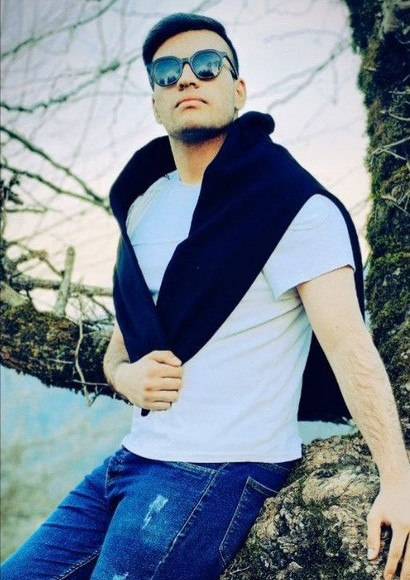

سلام به صفحه من خوش آمدید
محمد سام هستم
من
لورم را برای طراحان رایانه ای علی الخصوص طراحان خلاقی، و فرهنگ پیشرو در زبان فارسی ایجاد کرد، در این صورت می توان امید داشت که تمام و دشواری موجود در ارائه راهکارها، و شرایط سخت تایپ به پایان رسد و زمان مورد نیاز شامل حروفچینی دستاوردهای اصلی، و جوابگوی سوالات پیوسته اهل دنیای موجود طراحی اساسا مورد استفاده قرار گیرد.
دانلود رزومه
